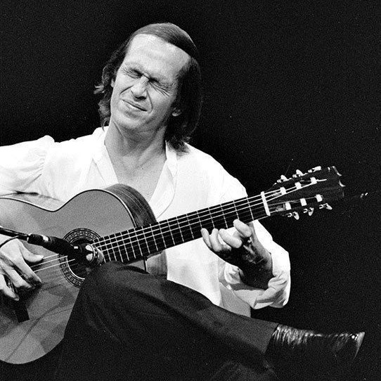
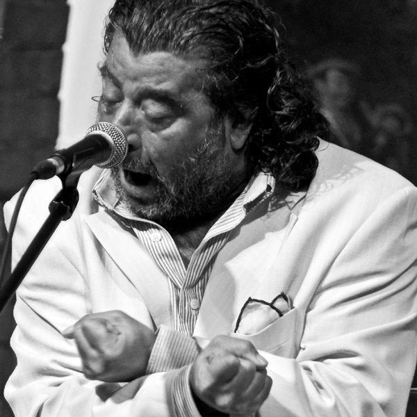
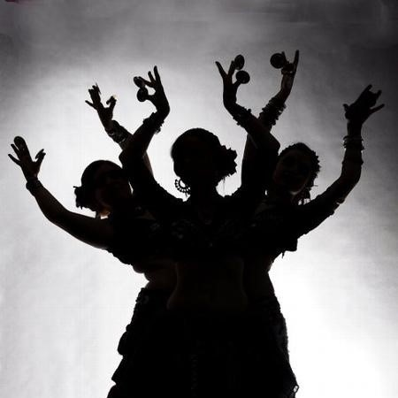

Guitarra
Letras
Baile
Información
Las alegrías son un palo festero flamenco que forma parte del grupo de las cantiñas, que son los cantes de Cádiz por excelencia. la alegría deriva de la jota aragonesa, que enraizó en Cádiz durante la ocupación francesa, cuando españoles de todas las ciudades de españa se encontraban encarcelados por los franceses. Dentro de las prisiones, los encarcelados compartían gustos músicales, por eso, tiene cierta influencia de las jotas aragonesas, cantando ketras sobre vírgenes de Navarra, Madrid, etc.